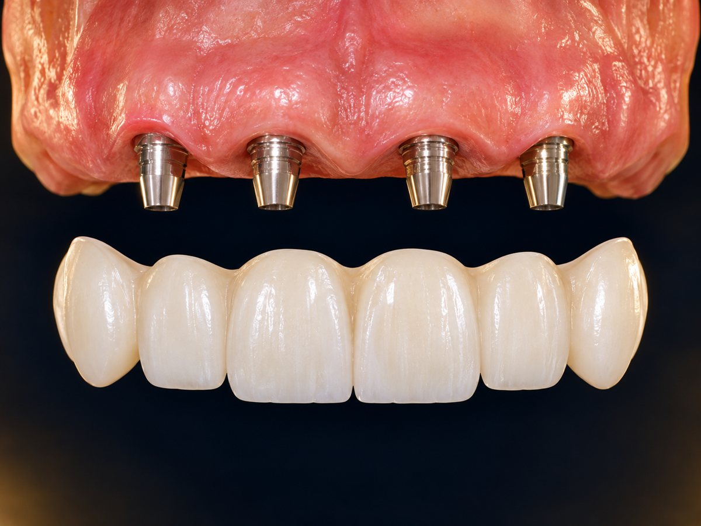
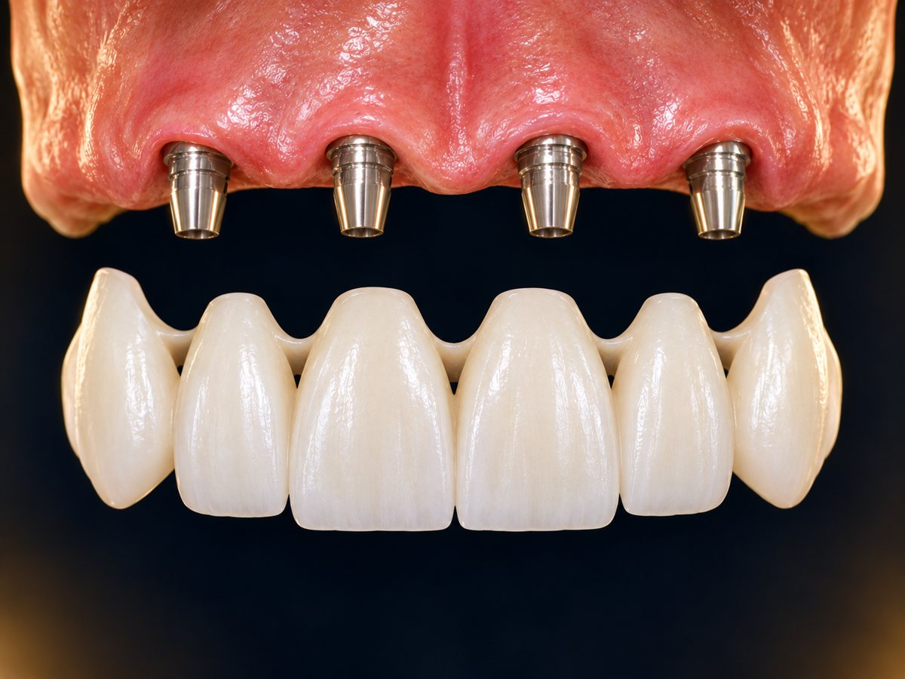
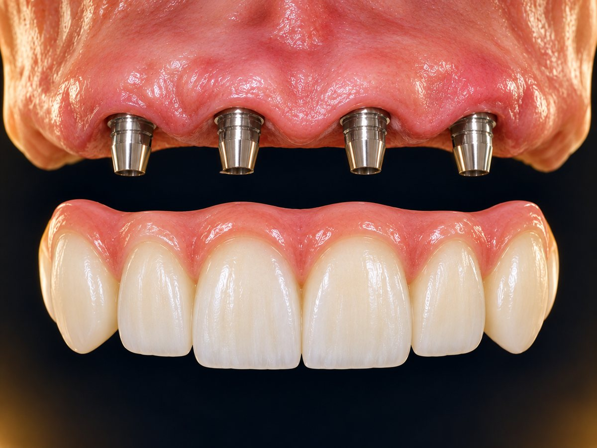
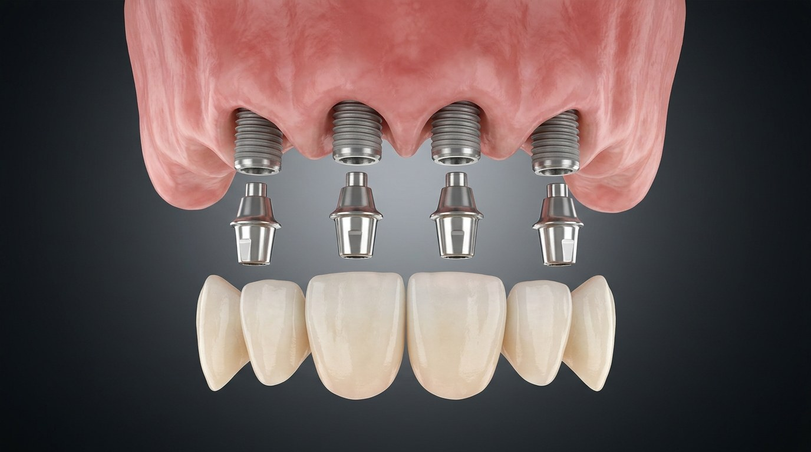
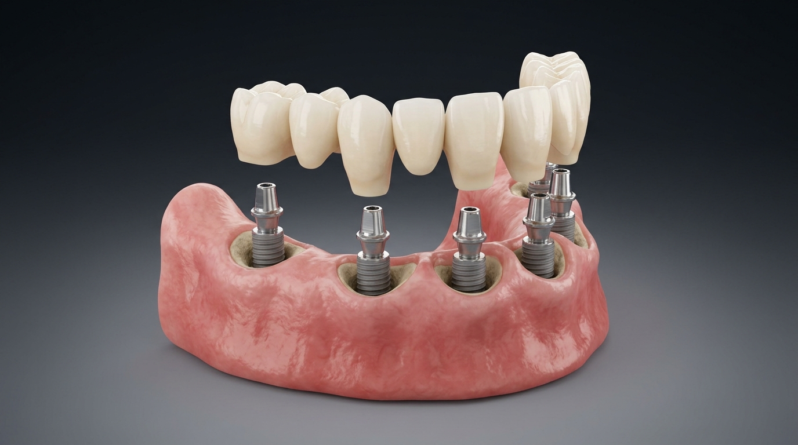
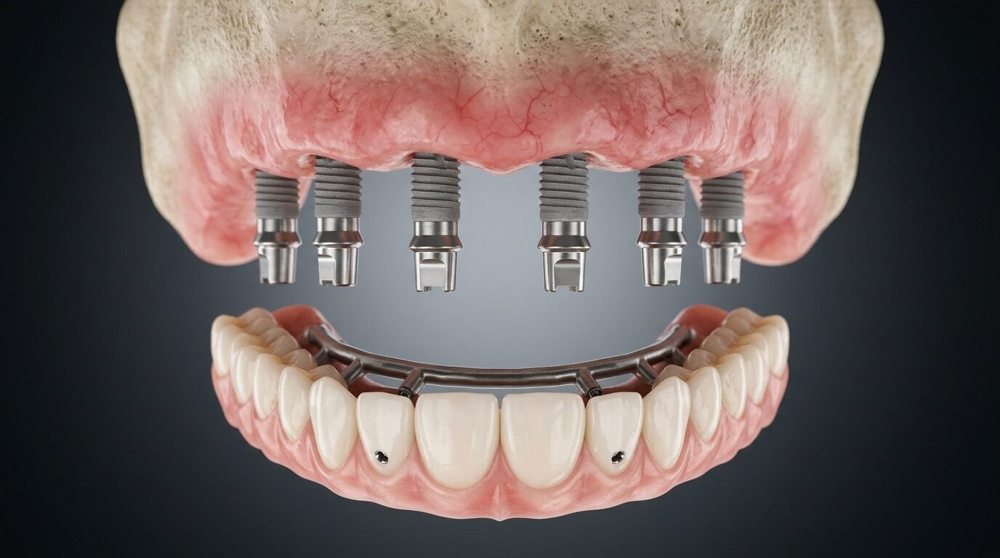
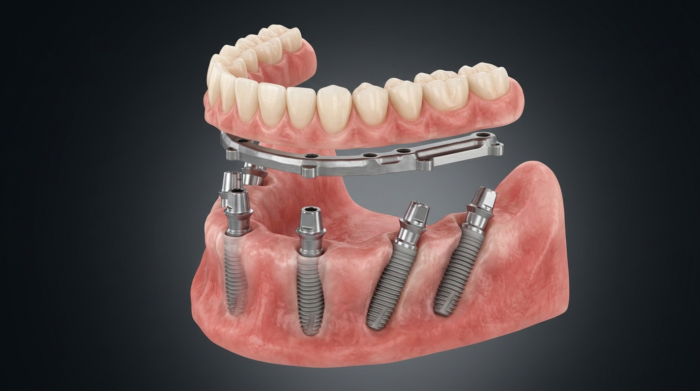
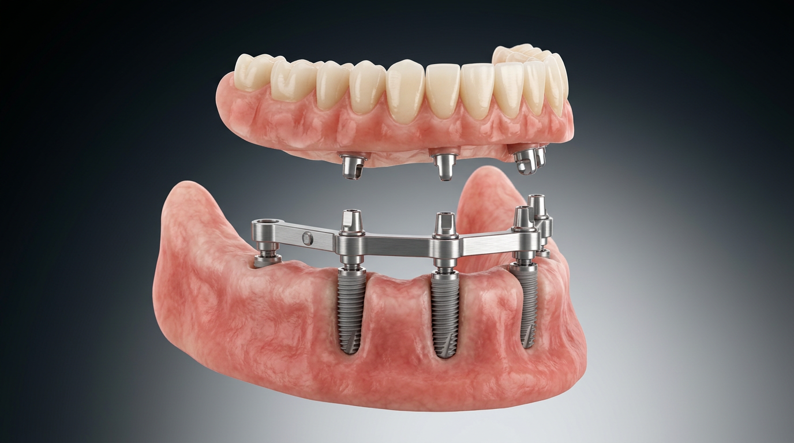
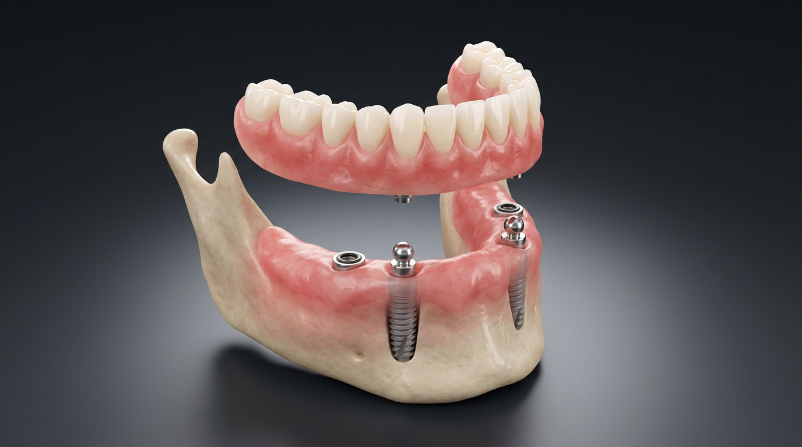
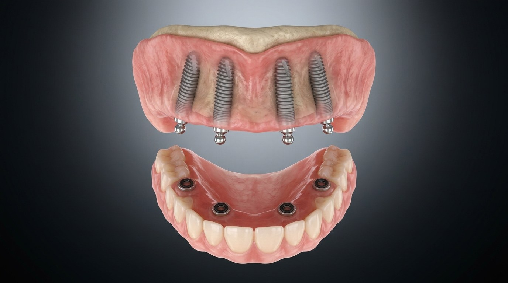

Implant dentistry
Dr Tejas Pradhan's Dental Clinic, Kokan Nagar Road, Jogeshwari East
Teeth on dental implants are grouped by the Misch classification (1989). FP means fixed prosthesis: you cannot take it out, only the dentist can. RP means removable prosthesis: you take it out to clean it. FP-1 to FP-3 describe how much tooth and gum is replaced. RP-4 and RP-5 describe what supports the denture.
Know the difference · Misch classification
The new teeth have normal length and come out of your own healthy gum, so they look like natural teeth. No pink material is used.

Some bone has shrunk, so the teeth are made a little longer near the gum to fill the space. Still tooth-coloured only, with no pink material.

Pink porcelain, zirconia or acrylic replaces the gum and bone that are lost, so the teeth keep a normal length. All-on-4 and All-on-6 bridges are FP-3.

Your smile, your confidence

In the picture: four implants, each with its own separate crown.

In the picture: a joined ceramic bridge on implants, with the longer gum side and cleaning space.


In the picture: 6 implants in the upper jaw and 4 implants in the lower jaw, each with a one-piece fixed acrylic hybrid above it. The number of implants is decided after your examination and scan.

In the picture: four lower implants joined by a metal bar, with the denture and its clip housing above.

In the picture: two implants with ball abutments in the canine areas, and the lower denture with two O-ring housings.

In the picture: four implants with ball abutments, and the upper denture with four O-ring housings.
| Type | Fixed or removable | Replaces | Supported by | Examples of implant numbers |
|---|---|---|---|---|
| FP-1 | Fixed | Crown only | Implants | One per missing tooth |
| FP-2 | Fixed | Crown and part of the root | Implants | Depends on the bridge |
| FP-3 | Fixed | Teeth and gum | Implants | For example 4 to 6 per jaw |
| RP-4 | Removable | Teeth and gum | Implants only | About as many as a fixed bridge |
| RP-5 | Removable | Teeth and gum | Implants and gum | For example 2 lower, 4 upper |
Classification: Misch 1989. Reference: Prosthetic options in implant dentistry.